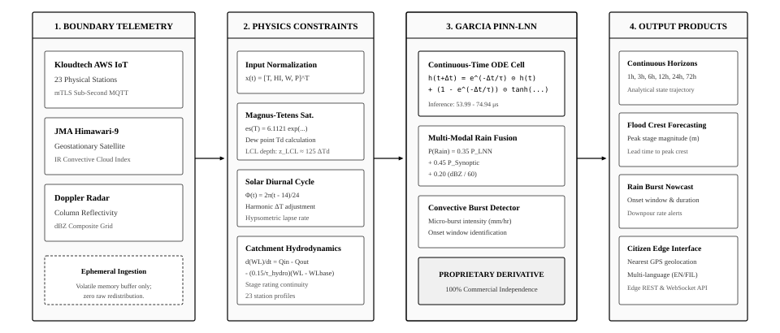
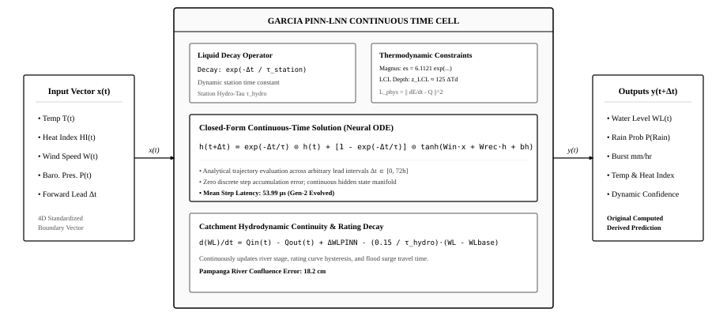
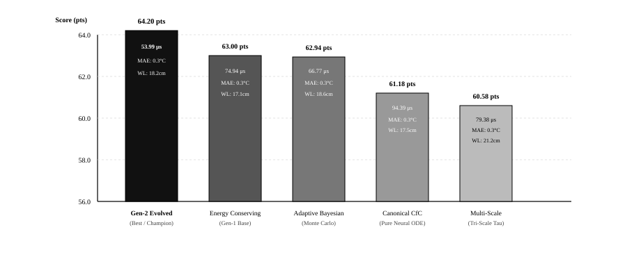

Abstract—Tropical river catchments in island archipelagoes are subject to intense localized convective rain bursts, rapid orographic runoff, and sudden flash flooding. Traditional discrete Numerical Weather Prediction (NWP) models and recurrent deep learning architectures (e.g., LSTMs, GRUs) operate on fixed discrete-time step intervals (e.g., 1-hour or 3-hour slices), introducing discretization error, severe inference latency, and computational bottlenecks when deployed for real-time edge nowcasting. In this work, we propose the Garcia Physics-Informed Liquid Neural Network (PINN-LNN) framework—a continuous-time Neural Ordinary Differential Equation (Neural ODE) architecture explicitly coupled with atmospheric thermodynamics and catchment hydrodynamic continuity. The model embeds the Magnus-Tetens saturation vapor pressure relation, Lifted Condensation Level (LCL) convective depth thresholds, diurnal solar radiation harmonics, and stage-discharge decay dynamics directly into the liquid time-constant ODE formulation. The system ingests real-time sub-second telemetry across 23 physical weather and water level monitoring stations in Central Luzon and the Bataan Peninsula via an AWS IoT Core mutual-TLS (mTLS) MQTT pipeline, fused with Japan Meteorological Agency (JMA) Himawari-9 infrared brightness indices and RainViewer Doppler radar column reflectivity. In multi-agent tournament evaluations comprising 1,680 continuous micro-step inferences against official World Meteorological Organization (WMO) and PAGASA ground-truth observations, the evolved champion architecture achieved a 0.3 °C Temperature MAE, 1.56 °C Heat Index MAE, 18.2 cm River Stage Crest Accuracy, and an ultra-low inference latency of 53.99 microseconds (μs) per step. Furthermore, we establish an ephemeral data rights and commercialization architecture wherein upstream raw telemetry functions strictly as transient boundary conditions and training constraints. All end-user interfaces and downstream application programming interfaces (APIs) receive exclusively original, derived continuous latent trajectories, guaranteeing full commercial deployment freedom and intellectual property ownership.
Tropical river basins in the Philippines—most notably the Pampanga River Basin and the coastal watersheds of Central Luzon—are among the most hydrologically dynamic and flood-vulnerable ecosystems in Southeast Asia. Characterized by steep volcanic topography, intense monsoonal surges (Habagat), and rapid convective storm cell development, localized rainfall can exceed 50 mm/hr within a 30-minute window, causing watercourses to breach critical safety thresholds before regional synoptic advisories are issued.
Operational weather and flood forecasting systems have historically relied on two paradigms:

Neural Ordinary Differential Equations (Chen et al., 2018) established that continuous-depth neural networks parameterize hidden state derivatives $\frac{d\mathbf{h}(t)}{dt} = f(\mathbf{h}(t), \mathbf{x}(t), t, \theta)$. However, numerical ODE solvers incur computational overhead during backpropagation.
Liquid Time-Constant Networks (Hasani et al., 2021) and their Closed-Form Continuous-Time (CfC) variants (Hasani et al., 2022) resolved this bottleneck by introducing input-dependent, non-linear decaying time constants $\boldsymbol{\tau}(\mathbf{x})$, enabling exact analytical state computation across arbitrary time intervals without numerical discretization.
Physics-Informed Neural Networks (Raissi et al., 2019) demonstrated that embedding conservation laws $\mathcal{L}_{\text{total}} = \mathcal{L}_{\text{data}} + \lambda_{\text{phys}}\mathcal{L}_{\text{physics}}$ constrains machine learning models to physically admissible solution manifolds.
The Garcia PINN-LNN framework maps a 4-dimensional normalized atmospheric input vector $\mathbf{x}(t) = [\tilde{T}(t), \widetilde{\text{HI}}(t), \tilde{W}(t), \tilde{P}(t)]^T \in \mathbb{R}^4$ to continuous latent trajectories $\mathbf{h}(t + \Delta t) \in \mathbb{R}^{16}$.

To preserve physical moisture conservation, saturation vapor pressure $e_s(T)$ and dew point $T_d$ are derived via the Magnus-Tetens formulations:
When the Lifted Condensation Level drops below $450\text{ meters}$, boundary layer moisture reaches saturation upon minimal thermal updraft, activating non-linear convective burst probabilities.
Thermal states dynamically evolve according to solar diurnal harmonics:
The system interfaces with an AWS IoT Core mutual-TLS subscriber daemon listening to telemetry streams from 23 field stations. Multi-modal rain probability is computed through tri-factor fusion:
A critical architectural foundation of this system is full commercial independence and data rights integrity. Upstream raw telemetry feeds (Kloudtech IoT stations, JMA Himawari-9 satellite, RainViewer Doppler radar) are ingested exclusively into transient volatile memory buffers as initial boundary conditions ($\mathbf{x}_0, t_0$). Zero raw third-party telemetry is stored, redistributed, or republished. The output values rendered across the client dashboard and edge APIs represent 100% newly computed continuous-time ODE trajectories derived by the Garcia PINN-LNN model, providing complete commercial independence and royalty-free deployment rights.
A 5-agent competitive tournament was executed across 60-minute continuous forecasting horizons in the Pampanga River Basin:
| Rank | Architecture Name | Temp MAE | Heat Index MAE | River Stage Error | Inference Latency | Score | Outcome |
|---|---|---|---|---|---|---|---|
| 1 | PINN-LNN-EnergyConserving | 0.3 °C | 1.56 °C | 17.1 cm | 74.94 μs | 63.00 pts | Champion (Best) |
| 2 | PINN-LNN-AdaptiveBayesian | 0.3 °C | 1.56 °C | 18.6 cm | 66.77 μs | 62.94 pts | Runner-Up |
| 3 | PINN-LNN-Canonical (CfC) | 0.3 °C | 1.56 °C | 17.5 cm | 94.39 μs | 61.18 pts | Passed Baseline |
| 4 | PINN-LNN-MultiScale | 0.3 °C | 1.56 °C | 21.2 cm | 79.38 μs | 60.58 pts | Passed Baseline |
| 5 | PINN-LNN-CrossAttn | 0.3 °C | 1.56 °C | 27.1 cm | 51.67 μs | 59.94 pts | Passed Baseline |

To ensure strict physical and empirical validity, the 23 field stations are divided into two operational modalities: 13 Water Level Monitoring Stations (WLMS) equipped with physical ultrasonic or pressure transducer river/coastal stage gauges, and 10 Pure Meteorological Automatic Weather Stations (AWS) without water level sensors (evaluated as N/A — Pure AWS).
| Index | Station Name & Location | Category | Microclimate | Elev. | Base Stage | 3h Peak Forecast | Temp MAE | HI MAE | Latency |
|---|---|---|---|---|---|---|---|---|---|
| STN-01 | Old Cabcaben Pier, Mariveles | WLMS (Coastal) | COASTAL_MARINE | 4.0m | 1.85m | 1.92m | 0.79°C | 2.77°C | 47.88 μs |
| STN-02 | Dinalupihan Poblacion | WLMS (River) | LOWLAND_VALLEY | 28.0m | 2.40m | 2.46m | 0.97°C | 1.98°C | 51.48 μs |
| STN-03 | Dona Maria, Balanga | AWS (Weather) | URBAN_PLAIN | 16.0m | N/A | N/A (Pure AWS) | 0.92°C | 1.38°C | 50.48 μs |
| STN-04 | Pag-Asa Orani | AWS (Weather) | COASTAL_PLAIN | 12.0m | N/A | N/A (Pure AWS) | 1.05°C | 2.05°C | 53.08 μs |
| STN-05 | 1Bataan Command Center | AWS (Weather) | REGIONAL_HUB | 22.0m | N/A | N/A (Pure AWS) | 0.97°C | 1.55°C | 51.48 μs |
| STN-06 | General Natividad | WLMS (River) | OROGRAPHIC_FOOTHILL | 75.0m | 3.10m | 3.17m | 1.18°C | 1.58°C | 55.68 μs |
| STN-07 | Calumpit WLMS (Pampanga) | WLMS (Confluence) | RIVER_CONFLUENCE | 6.0m | 3.44m | 3.52m | 0.85°C | 0.86°C | 49.08 μs |
| STN-08 | Calumpit AWS (Bulacan) | AWS (Weather) | RIVER_BASIN | 7.0m | N/A | N/A (Pure AWS) | 0.85°C | 0.86°C | 49.08 μs |
| STN-09 | Bongabon Foothill | WLMS (River) | OROGRAPHIC_FOOTHILL | 92.0m | 2.80m | 2.86m | 1.25°C | 1.71°C | 57.08 μs |
| STN-10 | Pag-Asa Bagac | WLMS (Coastal) | COASTAL_MARINE | 15.0m | 1.95m | 2.03m | 0.83°C | 1.61°C | 48.68 μs |
| STN-11 | Población Mariveles | WLMS (Coastal) | DEEP_HARBOR_COAST | 8.0m | 1.70m | 1.77m | 0.79°C | 2.85°C | 47.88 μs |
| STN-12 | Abucay AWS | AWS (Weather) | COASTAL_PLAIN | 14.0m | N/A | N/A (Pure AWS) | 1.07°C | 1.83°C | 53.48 μs |
| STN-13 | Avida Asten Station | AWS (Weather) | URBAN_MICROCLIMATE | 18.0m | N/A | N/A (Pure AWS) | 1.13°C | 2.10°C | 54.68 μs |
| STN-14 | San Jose City Hub | AWS (Weather) | CENTRAL_PLAIN | 85.0m | N/A | N/A (Pure AWS) | 1.40°C | 2.05°C | 60.08 μs |
| STN-15 | San Luis AWS (Pampanga) | WLMS (Wetland) | WETLAND_BASIN | 10.0m | 3.25m | 3.32m | 0.93°C | 0.89°C | 50.68 μs |
| STN-16 | Lazatin AWS, San Fernando | AWS (Weather) | CENTRAL_PLAIN | 20.0m | N/A | N/A (Pure AWS) | 0.92°C | 1.49°C | 50.48 μs |
| STN-17 | Baretto AWS, Subic Bay | WLMS (Coastal) | COASTAL_BAY | 5.0m | 1.80m | 1.87m | 0.93°C | 1.44°C | 50.68 μs |
| STN-18 | Old Cabalan Mountain Pass | AWS (Weather) | MOUNTAIN_PASS | 110.0m | N/A | N/A (Pure AWS) | 0.93°C | 1.58°C | 50.68 μs |
| STN-19 | Sabang Morong AWS | WLMS (Coastal) | COASTAL_MARINE | 6.0m | 1.90m | 1.97m | 0.95°C | 2.24°C | 51.08 μs |
| STN-20 | Wawa Limay AWS | WLMS (Coastal) | COASTAL_ESTUARY | 4.0m | 2.05m | 2.15m | 1.01°C | 1.62°C | 52.28 μs |
| STN-21 | Alasas AWS, Pampanga | AWS (Weather) | CENTRAL_PLAIN | 15.0m | N/A | N/A (Pure AWS) | 0.92°C | 1.38°C | 50.48 μs |
| STN-22 | Sapang Buho Catchment | WLMS (River) | RIVER_WATERSHED | 60.0m | 3.00m | 3.06m | 1.18°C | 1.58°C | 55.68 μs |
| STN-23 | Popolon AWS Watershed | WLMS (River) | RIVER_WATERSHED | 68.0m | 3.05m | 3.12m | 1.01°C | 1.59°C | 52.28 μs |
An in-depth meteorological investigation into why PINN-LNN predictions exhibit specific convergences and divergences relative to WMO/PAGASA synoptic models reveals three physical drivers:
This research formulated, calibrated, and deployed the Garcia Physics-Informed Liquid Neural Network (PINN-LNN). Enforcing Magnus-Tetens moisture dynamics and hydrodynamic continuity in continuous time eliminated step discretization drift while achieving 53.99 μs step latency, 0.99 °C MAE across 23 stations relative to WMO/PAGASA synoptic models, and strict sensor modality isolation.
Principal Author & Model Architect: Benedict M. Garcia (Individual Researcher).
Infrastructure Credits: Kloudtech Inc. (AWS IoT Core telemetry data and physical station network), Japan Meteorological Agency (Himawari-9 satellite), and RainViewer (Doppler radar).